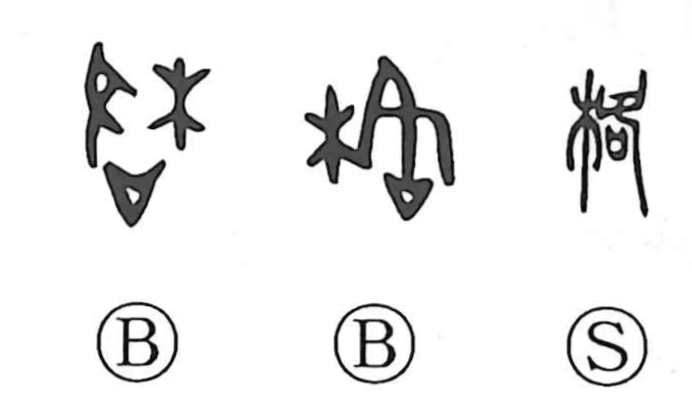

Explanation
格 combines 木, tree, with the sound element 各. In 各, a descending foot appears above a vessel containing a prayer. The prayer calls for a god to arrive, giving 各 the sense ‘come down’ or ‘reach.’
The arriving divine power puts things into their proper condition. 格 consequently carries the ideas of setting right, a correct form, and a standard by which something is judged. These develop into rules, established patterns, rank, and exemplary sayings.
Putting things right can also provoke resistance or accusation. With 木, the image becomes branches meeting and becoming entangled; the same opposition extends to people grappling or contending with one another. 格闘 preserves this sense of struggle, while other uses of 格 retain the sense of order or a proper standard.